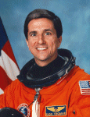

Lyndon B. Johnson Space Center
Houston, Texas 77058
|
National Aeronautics and Space Administration Lyndon B. Johnson Space Center Houston, Texas 77058 |
 |
Biographical Data |
||
Donald A. Thomas (Ph.D.)
NASA ASTRONAUT (FORMER)
PERSONAL DATA: Born May 6, 1955, in Cleveland, Ohio. Married to the former Simone Lehmann of Göppingen, Germany. They have one son. He enjoys swimming, biking, camping, flying. His mother, Mrs. Irene M. Thomas, resides in Bloomington, Indiana. Her parents, Margrit and Gerhard Lehmann, reside in Göppingen, Germany.
EDUCATION: Graduated from Cleveland Heights High School, Cleveland Heights, Ohio, in 1973; received a bachelor of science degree in Physics from Case Western Reserve University in 1977, and a master of science degree and a doctorate in Materials Science from Cornell University in 1980 and 1982, respectively. His dissertation involved evaluating the effect of crystalline defects and sample purity on the superconducting properties of niobium.
ORGANIZATIONS: Tau Beta Pi; Association of Space Explorers (ASE).
SPECIAL HONORS: Graduated with Honors from Case Western Reserve University in 1977. Recipient of NASA Sustained Superior Performance Award, 1989. Recipient of 4 NASA Group Achievement Awards, 4 NASA Space Flight Medals, 2 NASA Exceptional Service Medals, and the NASA Distinguished Service Medal.
EXPERIENCE: Following graduation from Cornell University in 1982, Dr. Thomas joined AT&T Bell Laboratories in Princeton, New Jersey, working as a Senior Member of the Technical Staff. His responsibilities there included the development of advanced materials and processes for high density interconnections of semiconductor devices. He was also an adjunct professor in the Physics Department at Trenton State College in New Jersey. He holds two patents and has authored several technical papers. He left AT&T in 1987 to work for Lockheed Engineering and Sciences Company in Houston, Texas, where his responsibilities involved reviewing materials used in Space Shuttle payloads. In 1988 he joined NASA’s Lyndon B. Johnson Space Center as a Materials Engineer. His work involved lifetime projections of advanced composite materials for use on Space Station Freedom. He was also a Principal Investigator for the Microgravity Disturbances Experiment, a middeck crystal growth experiment which flew on STS-32 in January 1990. This experiment investigated the effects of Orbiter and crew-induced disturbances on the growth of crystals in space.
He is a private pilot with over 250 hours in single engine land aircraft and gliders, and over 800 hours flying as mission specialist in NASA T-38 jet aircraft.
NASA EXPERIENCE: Selected by NASA in January 1990, Dr. Thomas became an astronaut in July 1991. Dr. Thomas has served in the Safety, Operations Development, and Payloads Branches of the Astronaut Office. He was CAPCOM (spacecraft communicator) for Shuttle missions STS-47, 52 and 53. From July 1999 to June 2000 he was Director of Operations for NASA at the Gagarin Cosmonaut Training Center in Star City, Russia. A veteran of four space flights, he has logged over 1,040 hours in space. He was a mission specialist on STS-65 (July 8-23, 1994), STS-70 (July 13-22, 1995), STS-83 (April 4-8, 1997) and STS-94 (July 1-17, 1997). Initially assigned to the ISS Expedition-6 crew, his flight assignment withdrawal resulted from a medical issue affecting long duration space flight qualifications. In his last assignment he served as the International Space Station Program Scientist overseeing NASA experiments performed on the ISS. Dr. Thomas retired from NASA in July 2007 in order to pursue private interests.
SPACE FLIGHT EXPERIENCE: STS-65 Columbia (July 8-23, 1994) set a new flight duration record for the Space Shuttle program. The mission flew the second International Microgravity Laboratory (IML-2). During the 15-day flight the crew conducted more than 80 experiments focusing on materials and life sciences research in microgravity. The mission was accomplished in 236 orbits of the Earth, traveling 6.1 million miles in 353 hours and 55 minutes.
STS-70 Discovery (July 13-22, 1995). During the STS-70 mission, Dr. Thomas was responsible for the deployment of the sixth and final Tracking and Data Relay Satellite from the Space Shuttle. Mission duration was 214 hours and 20 minutes, traveling 3.7 million miles in 142 orbits of the Earth.
STS-83 Columbia (April 4-8, 1997). The STS-83 Microgravity Science Laboratory ( MSL-1) Spacelab mission, was cut short because of problems with one of the Shuttle’s three fuel cell power generation units. Mission duration was 95 hours and 12 minutes, traveling 1.5 million miles in 63 orbits of the Earth.
STS-94 Columbia (July 1-17, 1997), was a re-flight of the Microgravity Science Laboratory ( MSL-1) Spacelab mission, and focused on materials and combustion science research in microgravity. Mission duration was 376 hours and 45 minutes, traveling 6.3 million miles in 251 orbits of the Earth.
JULY 2007